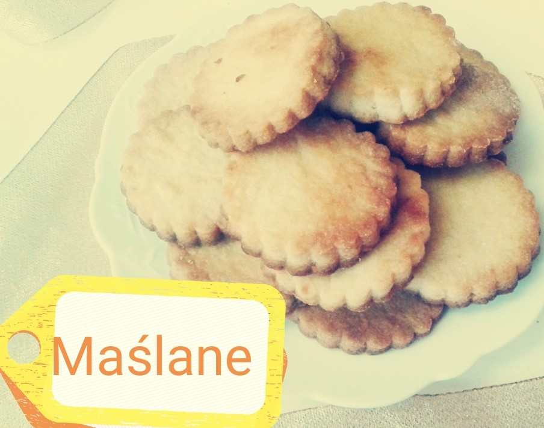
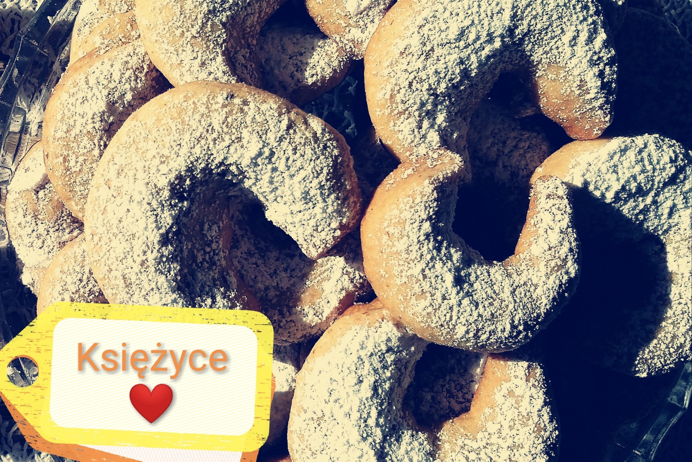
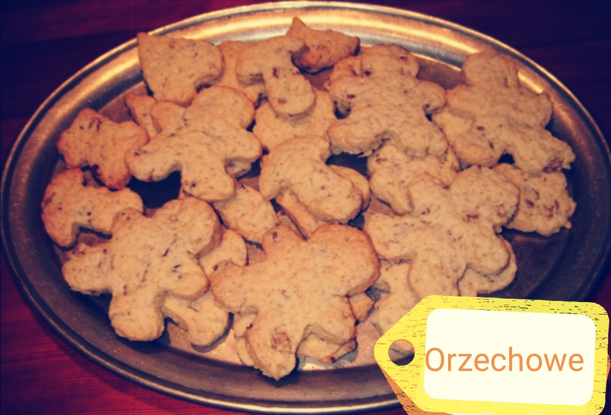

Maślane ciasteczka na sytuację kryzysową
- porcje: 28
- czas przygotowania: 10 min
- koszt: niski

- składniki:
- 300g mąki pszennej,
- 200g masła w temperaturze pokojowej,
- 100g cukru.
przygotowanie
Miękkie masło ucieramy z cukrem na puszystą masę, potem dodajemy
mąkę i zagniatamy przez chwilę. Z ciasta formujemy wałek i
odcinamy krążki wielkości centymetra. Ciastka pieczemy w
temperaturze 180oC, przez 8-10 minut.
Księżycowe pomarańcze
- porcje: 40
- czas przygotowania: 20 min
- koszt: średni

- składniki:
- 250g mąki pszennej,
- 70g cukru pudru,
- 200g masła,
- cukier wanilinowy,
- 100g zmielonych migdałów,
- 0.5 startej skórki z pomarańczy,
przygotowanie
suche składniki połączyć ze sobą. Dodać pokrojone masło i
wymieszać mikserem, aż powstaną wilgotne, zwarte okruchy. Ciasto
zagnieść krótko. Uformować rożki. Piec w temperaturze 160oC z
termoobiegiem, przez około 15 minut.
Ciastka orzechowe
- porcje: 40
- czas przygotowania: 30 min
- koszt: średni

- składniki:
- 400g mąki krupczatki,
- 0.5 szklanki cukru,
- cukier wanilinowy,
- szczypta soli,
- 250g masła,
- 0.5 łyżeczki proszku do pieczenia,
- 125g zmielonych orzechów laskowych,
- 2 żółtka.
przygotowanie
suche składniki połączyć ze sobą. Dodać miękkie masło i żółtka,
wszystko zarobić. Rozwałkować ciasto na 0.5 cm. Piec w
temperaturze 180oC do zarumienienia, około 8 minut.